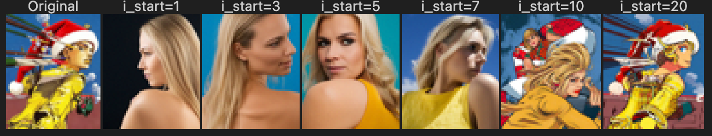
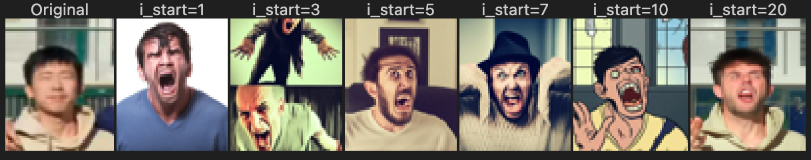
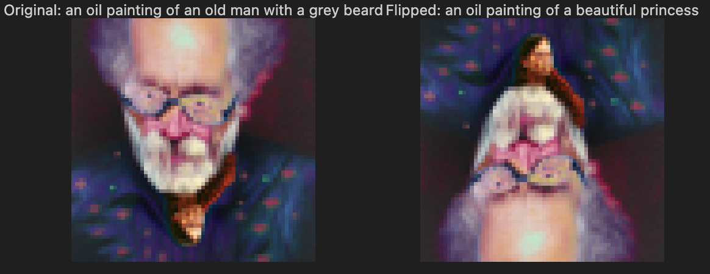
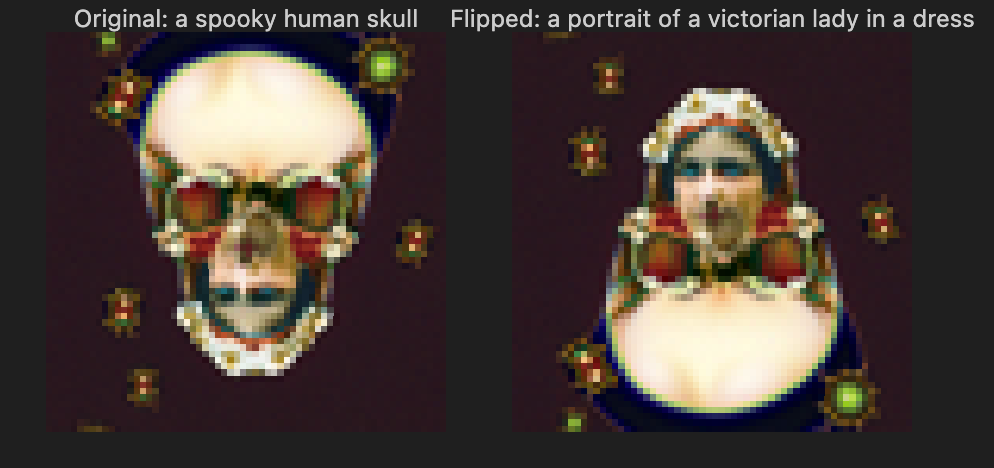

CS180 Project 5: Fun with Diffusion Models!
Name: Angxi Liu
Date: Fall 2025
Part A: The Power of Diffusion Models!
In this part, I experimented with the DeepFloyd IF diffusion model, implemented sampling loops, and used them for various tasks including inpainting and optical illusions.
Part 0: Setup
Random Seed: 100
Text Prompts and Embeddings
(Left: Stage 1, Right: Stage 2 | Steps: 20)
(Left: Stage 1, Right: Stage 2 | Steps: 20)
(Comparison of Num Inference Steps)
Reflection:
The DeepFloyd IF model demonstrates a profound capability in interpreting text semantics. In Prompt 1 and Prompt 2, the Stage 1 model (64x64), despite its lower resolution, accurately established the overall composition, tonality (e.g., the contrast of the neon lights, the somber palette of the junkyard), and the placement of core objects. The Stage 2 model effectively upscaled the low-resolution output; while preserving the original semantic structure, it significantly enhanced high-frequency details, such as the reflective texture of the "rain-slicked streets" and the fine details of the "rusting metal."
20 Steps (Lower Iteration): The image retains the overall composition and main color scheme but may appear slightly less coherent, blurrier, or blocky. Fine details, such as the texture of the rain-slicked streets or the intricate structure of the mechanical limbs, are less defined and more prone to visual noise or artifacts.
40 Steps (Higher Iteration): There is a noticeable improvement in detail, sharpness, and texture definition. The increased denoising iterations allow the model to refine features, resulting in cleaner edges (e.g., on neon signs or architecture) and a more faithful representation of complex elements. The image quality is generally more polished and higher fidelity.
1.1 Implementing the Forward Process
The forward diffusion process $q(x_t | x_0)$ adds Gaussian noise to a clean image $x_0$ to obtain a noisy image $x_t$ at timestep $t$. This process is implemented based on the equation: $$ x_t = \sqrt{\bar{\alpha}_t} x_0 + \sqrt{1 - \bar{\alpha}_t} \epsilon $$ where $\epsilon \sim N(0, 1)$ and the variance is $\sigma_t^2 = 1 - \bar{\alpha}_t$.
Implementation of `forward` function
def forward(im, t):
"""
Args:
im : torch tensor of size (1, 3, 64, 64) representing the clean image
t : integer timestep
Returns:
im_noisy : torch tensor of size (1, 3, 64, 64) representing the noisy image at timestep t
"""
with torch.no_grad():
# ===== your code here! ====
alpha_cumprod_t = stage_1.scheduler.alphas_cumprod[t]
noise = torch.randn_like(im)
im_noisy = torch.sqrt(alpha_cumprod_t) * im + torch.sqrt(1 - alpha_cumprod_t) * noise
# ===== end of code ====
return im_noisy
Noisy Image Results
1.2 Classical Denoising
To establish a baseline for the difficulty of denoising, we first applied a classical method: **Gaussian Blur filtering**. This technique involves convolving the image with a Gaussian kernel. The expected outcome is a trade-off: while the noise is attenuated, crucial image details are simultaneously lost (i.e., blurring of sharp edges).
Gaussian Blur Denoising Results
As anticipated, the Gaussian filtering struggled to effectively remove the Gaussian noise without causing significant degradation of the structural integrity and high-frequency content. The difficulty increases substantially as the noise level $t$ rises (from 250 to 750), confirming the limitations of non-data-driven linear filtering methods for complex signal restoration tasks.
1.3 One-Step Denoising
Using the pretrained UNet to denoise in a single step.
1.4 Iterative Denoising
Using iterative sampling to improve results.
# Loop through timesteps
for i in range(i_start, len(timesteps) - 1):
# 1. Calculate coefficients
alpha_cumprod = alphas_cumprod[t]
alpha = alpha_cumprod / alphas_cumprod[prev_t]
beta = 1 - alpha
# 2. Predict noise
model_output = stage_1.unet(image, t, encoder_hidden_states=prompt_embeds)[0]
noise_est, predicted_variance = torch.split(model_output, image.shape[1], dim=1)
# 3. Compute predicted x_0 and posterior mean
pred_x0 = (image - torch.sqrt(1 - alpha_cumprod) * noise_est) / torch.sqrt(alpha_cumprod)
mean = (torch.sqrt(prev_alpha) * beta * pred_x0 +
torch.sqrt(alpha) * (1 - prev_alpha) * image) / (1 - alpha_cumprod)
# 4. Update image
image = add_variance(predicted_variance, t, mean)
1. Denoising Process (Intermediate Steps)
2. Final Results Comparison
1.5 Diffusion Model Sampling
Generated 5 sample images using "a high quality photo" prompt.

1.6 Classifier-Free Guidance (CFG)
Using CFG scale of 7. Implementation details of the noise estimation:
# 1. Get conditional noise estimate
model_output = stage_1.unet(image, t, encoder_hidden_states=prompt_embeds...)[0]
# 2. Get unconditional noise estimate
uncond_model_output = stage_1.unet(image, t, encoder_hidden_states=uncond_prompt_embeds...)[0]
# 3. Split estimates
noise_est, _ = torch.split(model_output, image.shape[1], dim=1)
uncond_noise_est, _ = torch.split(uncond_model_output, image.shape[1], dim=1)
# 4. Compute the CFG noise estimate (The Core Formula)
cfg_noise_est = uncond_noise_est + scale * (noise_est - uncond_noise_est)
Generated Results:
- More Vivid Colors: The color saturation is noticeably enhanced, making the images look more vibrant.
- Higher Contrast: CFG effectively removes the "washed-out" or "foggy" look, resulting in a wider dynamic range and stronger contrast between light and dark areas.
1.7 Image-to-Image Translation (SDEdit)
SDEdit with "a high quality photo" prompt, applied to different starting noise levels.
Campanile Edits (Combined Series)
Own Image Edits
1.7.1 Editing Hand-Drawn and Web Images
Comparison of SDEdit applied to a web image and hand-drawn sketches.
1.7.2 Inpainting
We implement inpainting by modifying the iterative denoising process. At each step, we force the pixels outside the mask to match the noisy version of the original image, while letting the model generate pixels inside the mask.
# Inside the iterative loop (for each timestep t):
# 1. Compute the denoised step as usual (pred_prev_image)
# ... standard DDPM step ...
# 2. FORCING ORIGINAL PIXELS (The Inpainting Magic):
# Add noise to the original image to match the current timestep (prev_t)
original_noisy = forward(original_image, prev_t)
# 3. Combine them using the mask:
# mask=1: Keep the model's generation (The hole we want to fill)
# mask=0: Replace with the noisy original (The context we want to keep)
pred_prev_image = mask * pred_prev_image + (1 - mask) * original_noisy
Inpainting Results
1.7.3 Text-Conditional Image-to-image Translation
Using SDEdit to modify images based on specific text prompts.
Campanile Source Edits
Custom Image 1 Edit
Custom Image 2 Edit
1.8 Visual Anagrams
Optical illusions created by denoising with different prompts for flipped and original orientations.
Implementation Details
def make_flip_illusion(image, i_start, prompt1, prompt2, scale=7):
# Loop through the denoising schedule
for i in range(i_start, len(timesteps) - 1):
t = timesteps[i]
# --- 1. Forward View (Prompt 1) ---
# Predict noise for the upright image
cond_out1 = unet(image, t, encoder_hidden_states=prompt1)
uncond_out1 = unet(image, t, encoder_hidden_states=uncond_prompt)
noise_1 = uncond_out1 + scale * (cond_out1 - uncond_out1)
# --- 2. Flipped View (Prompt 2) ---
# Flip image upside down (dim=2 is height)
flipped_image = torch.flip(image, [2])
# Predict noise for the flipped image
cond_out2 = unet(flipped_image, t, encoder_hidden_states=prompt2)
uncond_out2 = unet(flipped_image, t, encoder_hidden_states=uncond_prompt)
noise_2_flipped = uncond_out2 + scale * (cond_out2 - uncond_out2)
# Flip the noise back to align with original orientation
noise_2 = torch.flip(noise_2_flipped, [2])
# --- 3. Combine & Denoise ---
# Average the gradients from both views
final_noise = (noise_1 + noise_2) / 2
# Standard DDPM Step
image = step(image, final_noise, t)
return image
Generated Illusions
Illusion 1: Old Man vs. Princess
Prompt 2: "An oil painting of a beautiful princess"
Illusion 2: Skull vs. Victorian Lady
Prompt 2: "A portrait of a victorian lady in a dress"
1.9 Hybrid Images
We use Factorized Diffusion to create hybrid images. By generating separate noise estimates for two different prompts and combining the low frequencies of one with the high frequencies of the other, we create an image that changes interpretation based on viewing distance.
Core Implementation Logic
The essential part inside the denoising loop where frequencies are mixed:
#Inside the iterative denoising loop (at timestep t): # 1. Get noise estimate for Prompt 1 (Low Frequency / Far View) cfg_noise1 = uncond_noise + scale * (noise1 - uncond_noise) # 2. Get noise estimate for Prompt 2 (High Frequency / Near View) cfg_noise2 = uncond_noise + scale * (noise2 - uncond_noise) # --- Frequency Mixing --- # Extract LOW frequencies from noise1 using Gaussian blur low_freq_noise = F.gaussian_blur(cfg_noise1, kernel_size=33, sigma=[2.0, 2.0]) # Extract HIGH frequencies from noise2 (Original minus Low-pass) high_freq_noise = cfg_noise2 - F.gaussian_blur(cfg_noise2, kernel_size=33, sigma=[2.0, 2.0]) # Combine them to form the final noise estimate final_noise = low_freq_noise + high_freq_noise # Proceed with standard denoising step using final_noise...
Generated Hybrid Results
Try squinting or moving away from the screen to see the "Low Frequency" prompt, and look closely to see the "High Frequency" prompt.
View from Far (Low Freq): "a photo of a giant panda"
View from Close (High Freq): "a snowy mountain with dark rocks"
View from Far (Low Freq): "a photo of a delicious burger"
View from Close (High Freq): "a grand canyon landscape"
Part B: Diffusion Models from Scratch!
1. Training a Single-Step Denoising UNet
1.2 Noising Process Visualization
Visualizing the noising process with σ = [0.0, 0.2, 0.4, 0.5, 0.6, 0.8, 1.0].
1.2.1 Training the Denoiser (σ = 0.5)
1.2.2 Out-of-Distribution Testing
Testing the denoiser on noise levels it wasn't trained on.
1.2.3 Denoising Pure Noise
Attempting to generate images by denoising pure Gaussian noise.
Discussion: When trained to denoise pure Gaussian noise, the model consistently generates samples that resemble a single digit class, most notably digit “3”. This behavior can be explained by the use of an MSE loss: when the input contains no meaningful signal, the optimal prediction that minimizes the expected squared error is the conditional mean of the training data distribution. As a result, the denoiser collapses toward a prototypical or centroid-like image that represents an average over many training examples. Since digit “3” appears frequently and has a relatively smooth, symmetric structure, it dominates this average, causing most generated samples to converge toward a similar-looking digit. This highlights a limitation of simple denoising objectives when used as generative models without explicit multimodal or stochastic mechanisms.
2. Training a Flow Matching Model
2.2 Time-Conditioned UNet
2.3 Sampling from Time-Conditioned UNet
As training progresses, the time-conditioned UNet generates samples that are progressively cleaner and more structured. At early epochs, the model struggles to remove noise and the samples appear blurry with weak semantic structure. By Epoch 10, the generated images exhibit clearer digit-like shapes, indicating that the model has learned to leverage timestep conditioning to perform coarse-to-fine denoising. This behavior aligns with the intuition behind diffusion models, where information is gradually recovered as noise levels decrease.
Using different random seeds while keeping the model checkpoint fixed results in visually distinct samples, demonstrating that the time-conditioned UNet is able to generate diverse outputs rather than collapsing to a single prototype. Although the overall digit quality and structure remain similar across seeds, fine-grained details such as stroke thickness and local shapes vary. This indicates that the model has learned a stochastic generative process conditioned on the noise initialization, consistent with the intended behavior of diffusion-style models.
Discussion. The two sets of visualizations highlight complementary aspects of the time-conditioned model. Varying the training epoch reveals how sample quality improves as the model learns to denoise more effectively over time, while varying the random seed illustrates the inherent stochasticity and diversity of the generative process. Together, these results suggest that the model successfully balances convergence and diversity, producing increasingly structured samples without collapsing to deterministic outputs.